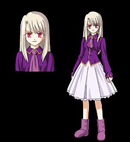

Илиясвиль фон Айнсберн (яп. イリヤスフィール・フォン・アインツベルン) (Илия)

Mаленькая девочка, участвующая в войне от лица семейства Айнсберн — того самого, представители которого и стали инициаторами проведений войн Святого Грааля. Живет в лесном замке Айнсберн, в котором представители семьи живут во время войн. Очень сильный маг. Илия сумела призвать Берсеркера — самого сильного физически слугу и с легкостью им управлять, конвертируя свои магические силы в энергию для своего слуги. Илия, по сути, живое воплощение Святого Грааля. Любит приставать к Широ и называть его «братиком». Сперва выступает как главный противник Широ и Рин. За Илией во время войн следят её служанки и телохранительницы: Лейсритт и Сэлла.
Слуга
Назад